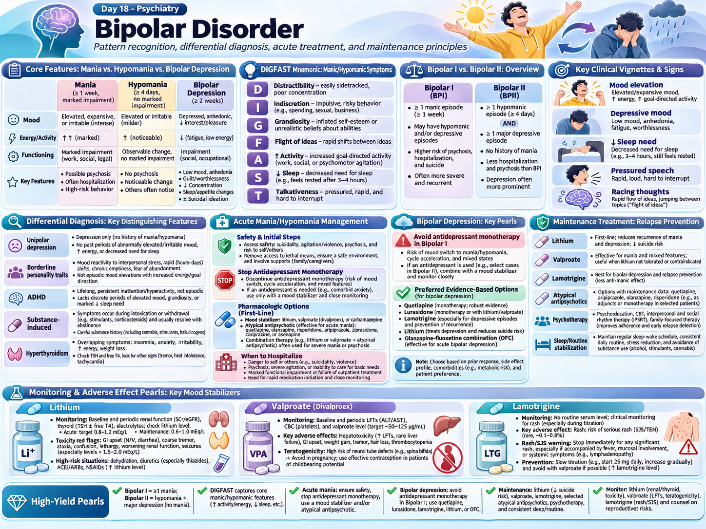
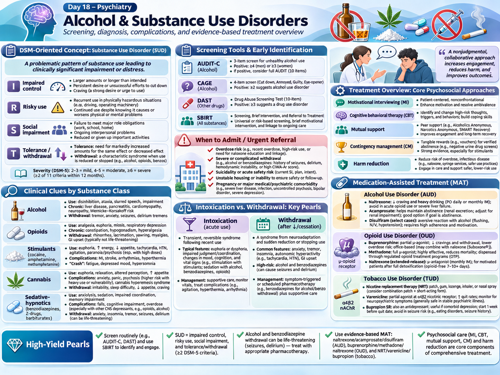
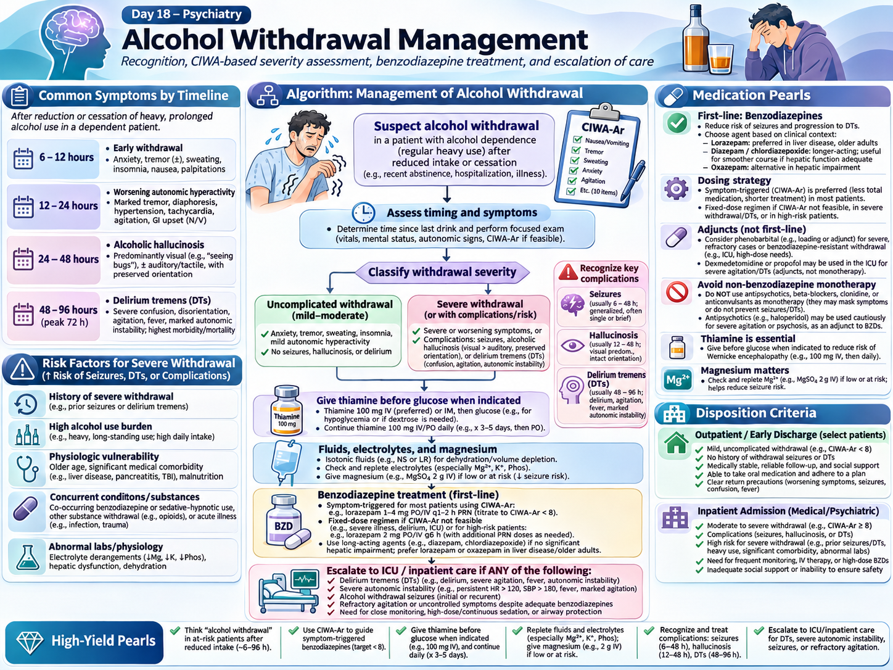
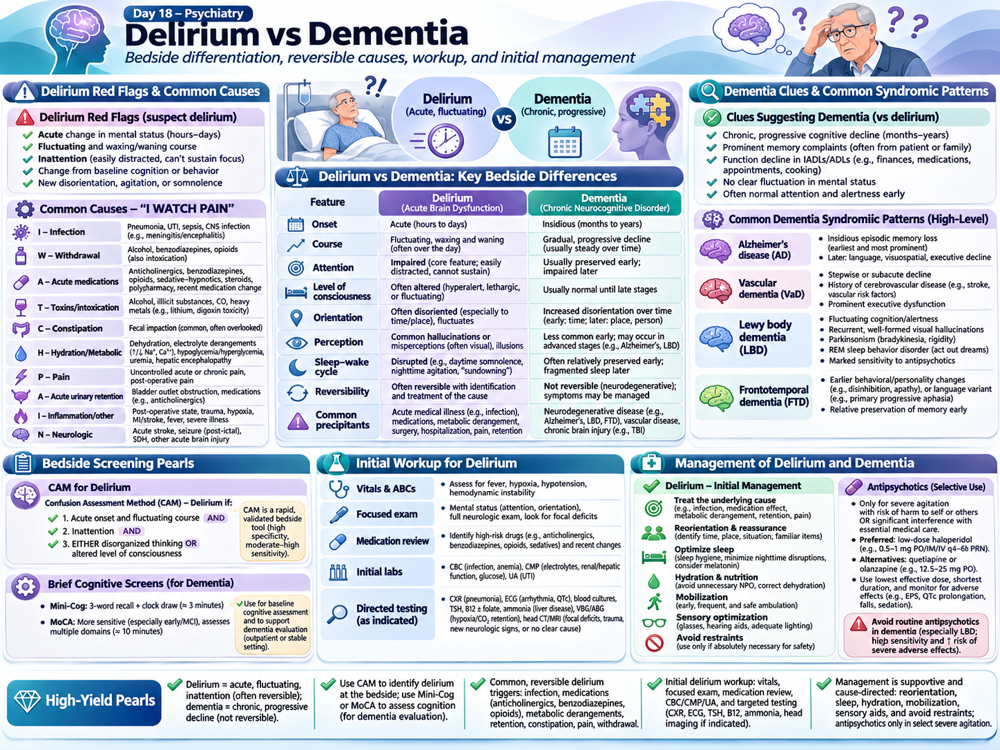
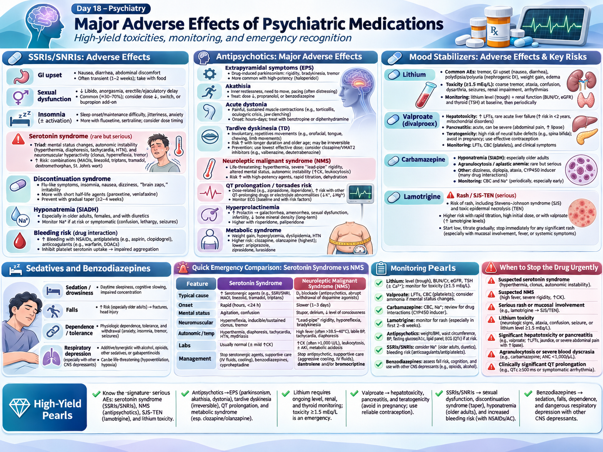

Day 18 — Psychiatry
Depression and suicide-risk assessment, anxiety/panic, bipolar disorder, psychosis/schizophrenia, alcohol/substance-use disorders, alcohol withdrawal, delirium vs dementia, insomnia, and psychiatric medication adverse effects.
90 questions
1. Depression & Suicide-Risk Assessment
High-yield physician-level psychiatry review with clinical decision-making focus.
Definition & classic presentation
- Major depressive disorder requires depressed mood and/or anhedonia plus associated neurovegetative/cognitive symptoms causing clinically significant impairment. A classic exam frame is ≥2 weeks with at least 5 symptoms, including depressed mood or anhedonia.
- Always distinguish unipolar depression from bipolar disorder by asking about prior mania/hypomania.
Suicide-risk assessment
- Ask directly about suicidal thoughts, intent, plan, access to means, prior attempts, recent preparatory behavior and protective factors.
- Prior suicide attempt is one of the strongest predictors of future suicidal behavior.
- Assess acute risk and ability to maintain safety; do not rely on a single screening score in isolation.
Initial treatment
- Psychotherapy and antidepressant pharmacotherapy are both evidence-based options; treatment intensity depends on severity, preference, comorbidity and prior response.
- SSRIs/SNRIs are commonly used first-line medications. Explain delayed therapeutic effect and early adverse effects.
- Severe depression with psychosis, catatonia, major nutritional compromise, or urgent suicidality may require specialty/inpatient care; ECT can be appropriate in selected severe cases.
Emergency / red flags
- Active suicidal intent/plan, inability to maintain safety, severe agitation, psychosis, or rapidly worsening symptoms require urgent psychiatric evaluation.
- Use collaborative safety planning and reduce access to lethal means where feasible.
- Do not use “no-suicide contracts” as a substitute for a real risk assessment and safety plan.
Do not confuse with
- Bipolar depression: prior mania/hypomania changes treatment.
- Bereavement/adjustment disorder: symptoms are linked to a stressor and may not meet MDD criteria.
- Substance/medication-induced depression and medical causes such as hypothyroidism should be considered when clinically indicated.
🖼️ Depression & Suicide-Risk Assessment Infographic
Professional Day 18 visual review
2. Anxiety & Panic Disorder
High-yield physician-level psychiatry review with clinical decision-making focus.
Classic presentation
- GAD: excessive, difficult-to-control worry across multiple domains for ≥6 months with symptoms such as restlessness, fatigue, poor concentration, irritability, muscle tension and sleep disturbance.
- Panic attack: abrupt surge of intense fear/discomfort peaking within minutes with autonomic and cognitive symptoms. Panic disorder requires recurrent unexpected attacks plus persistent concern or maladaptive behavior change.
Workup & differentials
- History and physical exam should look for cardiac, pulmonary, endocrine, neurologic, medication and substance causes.
- Consider ECG, glucose, thyroid testing, or other studies when symptoms or risk factors suggest a medical mimic.
- Chest pain, syncope, focal neurologic deficit, severe dyspnea or intoxication/withdrawal should not be labeled “anxiety” before medical causes are assessed.
First-line treatment
- CBT is a first-line treatment for GAD and panic disorder. Exposure-based methods are central for panic/agoraphobic avoidance.
- SSRIs/SNRIs are first-line pharmacologic options for persistent GAD/panic symptoms.
- Benzodiazepines are not preferred for long-term panic treatment because of dependence, withdrawal and poorer long-term outcomes.
Red flags
- Suicidality, psychosis, severe functional deterioration or inability to care for self require urgent evaluation.
- Atypical first presentation, new neurologic signs, significant arrhythmia risk, or substance withdrawal should prompt broader evaluation.
Memory line
- Panic symptoms are real physiology—but the diagnosis is made only after dangerous mimics are considered.
🖼️ Anxiety & Panic Disorder Infographic
Professional Day 18 visual review
📚 Guidelines & Academic Sources
3. Bipolar Disorder
High-yield physician-level psychiatry review with clinical decision-making focus.
Recognition
- Mania: abnormally elevated/expansive or irritable mood with increased energy/activity lasting about 1 week or requiring hospitalization, with marked impairment or psychosis possible.
- Hypomania lasts at least 4 days and is observable but does not cause marked impairment or psychosis.
- DIGFAST: Distractibility, Indiscretion, Grandiosity, Flight of ideas, Activity increase, Sleep need decreased, Talkativeness.
Bipolar I vs II
- Bipolar I requires at least one manic episode.
- Bipolar II requires hypomania plus major depressive episode and no history of mania.
- Screen for substances, medications and medical causes such as hyperthyroidism.
Treatment principles
- Acute mania generally requires a mood stabilizer and/or antipsychotic; safety and sleep restoration are early priorities.
- Avoid antidepressant monotherapy in bipolar I because of mood-switch/cycle risk.
- Maintenance therapy commonly uses lithium, valproate, lamotrigine and/or selected atypical antipsychotics based on polarity and patient factors.
When to hospitalize
- Danger to self/others, severe agitation, psychosis, inability to care for basic needs, or failure of safe outpatient treatment.
- Lithium toxicity, severe valproate toxicity, or serious medication rash also require urgent evaluation.
Medication pearls
- Lithium: monitor renal and thyroid function and serum levels; toxicity causes GI symptoms, tremor, ataxia, confusion and seizures.
- Valproate: hepatotoxicity, thrombocytopenia and major teratogenic risk.
- Lamotrigine: slow titration because serious rash/SJS-TEN risk rises with rapid titration.
🖼️ Bipolar Disorder Infographic
Professional Day 18 visual review
📚 Guidelines & Academic Sources
4. Psychosis / Schizophrenia
High-yield physician-level psychiatry review with clinical decision-making focus.
Core syndrome
- Psychosis may include delusions, hallucinations, disorganized speech, grossly disorganized/catatonic behavior and negative symptoms.
- Schizophrenia-spectrum diagnosis requires duration and functional criteria; first-episode psychosis should be approached as a syndrome before assigning a primary psychiatric cause.
Medical rule-out
- Red flags for secondary causes: fluctuating consciousness, abnormal vital signs, focal neurologic deficits, new seizures, meningismus, prominent visual hallucinations, intoxication/withdrawal, or atypical/late age of onset.
- Focused labs are guided by context; commonly considered tests include CBC/CMP, TSH, urine toxicology, pregnancy test and selected infectious/nutritional studies. Neuroimaging is not automatic but is appropriate with focal findings, trauma, seizures or other neurologic concern.
Initial management
- Prioritize safety, verbal de-escalation and low-stimulation environment.
- Antipsychotic treatment is chosen based on efficacy, prior response, metabolic/EPS profile and patient preference.
- Monitor weight/BMI, BP, glucose/A1c, lipids and extrapyramidal symptoms.
Emergency features
- Severe agitation or violence, suicidal/homicidal risk, catatonia, inability to care for self, or suspected medical delirium/intoxication require urgent higher-level care.
- Do not miss delirium: fluctuating attention and consciousness strongly favor a medical brain dysfunction rather than primary schizophrenia.
Memory line
- First-episode psychosis = safety first + rule out medical/substance causes + then classify the psychiatric syndrome.
🧭 Psychosis / Schizophrenia Clinical Algorithm
Professional Day 18 visual review
📚 Guidelines & Academic Sources
5. Alcohol & Substance-Use Disorders
High-yield physician-level psychiatry review with clinical decision-making focus.
Substance-use disorder framework
- A problematic pattern of use causes impaired control, risky use, social impairment and/or pharmacologic features such as tolerance/withdrawal. Severity increases with number of criteria.
- Use nonjudgmental language and ask about alcohol, opioids, stimulants, cannabis, sedatives, nicotine and polysubstance use.
Screening
- AUDIT-C/CAGE can help identify unhealthy alcohol use; DAST and SBIRT-style approaches support drug screening and brief intervention.
- Positive screening should lead to assessment of severity, withdrawal risk, overdose risk, psychiatric comorbidity and readiness for treatment.
Treatment
- Alcohol use disorder: naltrexone or acamprosate are common evidence-based medication options; disulfiram is selected-case therapy.
- Opioid use disorder: buprenorphine and methadone reduce mortality; extended-release naltrexone is another option after adequate opioid-free interval.
- Psychosocial treatment includes motivational interviewing, CBT, mutual support and contingency management.
Urgent issues
- Overdose, severe withdrawal, suicidality, psychosis, pregnancy with unstable use, or serious medical comorbidity may require urgent referral/admission.
- Harm-reduction measures include naloxone access for opioid risk and counseling about safer use.
Exam pearl
- Withdrawal from alcohol or benzodiazepines can be life-threatening; opioid withdrawal is usually not fatal but relapse/overdose risk is high.
🖼️ Alcohol & Substance-Use Disorders Infographic
Professional Day 18 visual review
📚 Guidelines & Academic Sources
6. Alcohol Withdrawal
High-yield physician-level psychiatry review with clinical decision-making focus.
Timeline
- Early withdrawal often begins within hours after reduced/ceased drinking: tremor, anxiety, insomnia, nausea and autonomic hyperactivity.
- Withdrawal seizures commonly occur within the first 6–48 hours.
- Delirium tremens typically occurs later, often 48–96 hours, with delirium and marked autonomic instability.
Severity assessment
- Assess prior withdrawal seizures/DTs, daily intake, medical comorbidity, pregnancy, concurrent sedative use and ability to be safely monitored.
- CIWA-Ar is useful in communicative patients but should not replace clinical judgment and is unreliable in delirium or some medically complex patients.
Treatment
- Benzodiazepines are first-line for moderate/severe alcohol withdrawal. Symptom-triggered regimens are efficient when reliable assessment is possible; fixed-dose regimens may be safer in selected settings.
- Give thiamine early in patients at risk for deficiency; do not delay emergency glucose for severe hypoglycemia.
- Correct fluids and electrolyte abnormalities, especially magnesium and potassium when indicated.
Escalate care
- Seizures, delirium tremens, severe autonomic instability, severe comorbidity, refractory agitation, or need for high-dose sedatives require inpatient/ICU-level care.
- Phenobarbital may be used by experienced clinicians/protocols, especially as an adjunct or alternative in selected patients.
Memory line
- Alcohol withdrawal is a neurologic/autonomic emergency—not simply “anxiety after stopping alcohol.”
🧭 Alcohol Withdrawal Clinical Algorithm
Professional Day 18 visual review
📚 Guidelines & Academic Sources
7. Delirium vs Dementia
High-yield physician-level psychiatry review with clinical decision-making focus.
Delirium vs dementia
- Delirium: acute onset, fluctuating course, impaired attention and often altered level of consciousness; usually triggered by an underlying medical problem.
- Dementia: chronic progressive cognitive decline with relatively preserved alertness early; attention is usually less impaired early.
Common delirium causes
- Infection, medications, intoxication/withdrawal, metabolic/electrolyte disorders, hypoxia, pain, constipation, urinary retention and environmental disruption.
- Review anticholinergics, sedatives, opioids and recent medication changes.
Workup & bedside tools
- CAM-type assessment emphasizes acute/fluctuating course and inattention plus disorganized thinking or altered consciousness.
- Check vitals, oxygenation, glucose, focused neurologic exam and targeted labs. Additional testing is driven by history/exam.
- Brief cognitive screens such as Mini-Cog or MoCA support stable dementia assessment but are not substitutes for evaluating delirium.
Management
- Treat the underlying cause; use reorientation, hydration, sleep preservation, mobilization and sensory aids.
- Avoid routine restraints. Antipsychotics are reserved for selected severe agitation threatening safety or essential care and should be used cautiously.
Do not confuse
- Lewy body dementia can cause visual hallucinations and fluctuations but has a chronic course; marked antipsychotic sensitivity is a clue.
🖼️ Delirium vs Dementia Infographic
Professional Day 18 visual review
8. Insomnia
High-yield physician-level psychiatry review with clinical decision-making focus.
Definition
- Chronic insomnia disorder involves difficulty initiating or maintaining sleep (or early awakening) despite adequate opportunity, with daytime impairment, typically ≥3 nights/week for ≥3 months.
- Always ask about sleep schedule, naps, caffeine/alcohol, medications, mood/anxiety, snoring/apneas and restless legs symptoms.
First-line treatment
- CBT-I is the recommended first-line treatment for chronic insomnia. It combines stimulus control, sleep restriction/compression, cognitive restructuring, relaxation and sleep-hygiene education.
- Sleep hygiene alone is usually not enough for chronic insomnia.
When medication is used
- Use the lowest effective dose for the shortest appropriate period and match medication to the patient’s risk profile.
- Avoid chronic benzodiazepine use when possible because of dependence, falls, cognitive impairment and withdrawal.
- Review interactions with alcohol/opioids and other CNS depressants.
Red flags / alternate causes
- Loud snoring, witnessed apneas and daytime sleepiness suggest OSA.
- Urge to move legs at night suggests restless legs syndrome.
- Mania, substance withdrawal, severe depression/suicidality or dangerous daytime sleepiness require broader evaluation.
Memory line
- Chronic insomnia → CBT-I first; pills are not the foundation.
🖼️ Insomnia Infographic
Professional Day 18 visual review📚 Guidelines & Academic Sources
9. Psychiatric Medication Major Adverse Effects
High-yield physician-level psychiatry review with clinical decision-making focus.
SSRIs / SNRIs
- Common: GI upset, sexual dysfunction, sleep disturbance and activation.
- Serotonin syndrome: mental-status change + autonomic hyperactivity + neuromuscular findings such as clonus/hyperreflexia.
- Discontinuation syndrome is more likely with short half-life agents or abrupt cessation; taper when clinically appropriate.
Antipsychotics
- EPS: acute dystonia, akathisia, parkinsonism; tardive dyskinesia can become persistent.
- Neuroleptic malignant syndrome: severe rigidity, hyperthermia, autonomic instability and CK elevation—stop the drug and treat urgently.
- Monitor metabolic effects (weight, glucose, lipids), QT risk and prolactin when relevant.
Mood stabilizers
- Lithium: renal/thyroid effects and toxicity; NSAIDs, ACE inhibitors/ARBs and thiazides can raise lithium levels.
- Valproate: hepatotoxicity, thrombocytopenia, pancreatitis and major teratogenic risk.
- Carbamazepine: hyponatremia, cytopenias and drug interactions. Lamotrigine: serious rash/SJS-TEN.
Sedatives / emergencies
- Benzodiazepines cause sedation, falls, dependence and respiratory depression especially with opioids/alcohol.
- Stop and urgently evaluate for serotonin syndrome, NMS, severe drug rash, severe lithium toxicity, agranulocytosis, pancreatitis or major arrhythmia.
High-yield comparison
- Serotonin syndrome is typically rapid with clonus/hyperreflexia; NMS is usually slower with “lead-pipe” rigidity and dopamine-blocking exposure.
🖼️ Psychiatric Medication Major Adverse Effects Infographic
Professional Day 18 visual review
📚 Guidelines & Academic Sources
📊 External QBank Progress — Day 18
Use this for any external QBank block. It is separate from the original quizzes on this page.